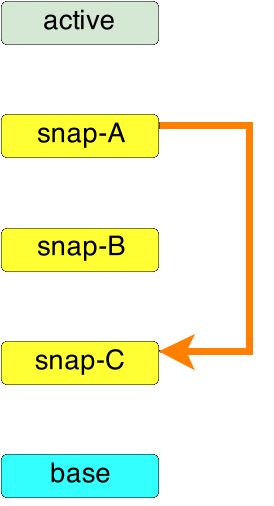
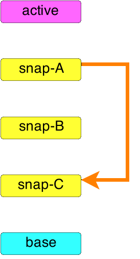

Job Safety:
Blockers in the Block Layer
Jeff Cody | jcody@redhat.comPresentation available at: http://qemu.rocks/kvm2014-2
Job Safety:
Blockers in the Block Layer
Jeff Cody | jcody@redhat.comPresentation available at: http://qemu.rocks
QEMU Block Jobs
QEMU Block Jobs
-
Started via QMP or HMP
- block-commit
- block-stream
- etc...
-
Runs in a coroutine, while guest runs
- Asynchrounous
- Modifies block image(s) in some way
Why are Blockers Needed?
- bs->job already prohibits multiple jobs
- Does not just block other block jobs
- Blocks some synchronouse commands
- eject
- hmp commit
- drive-del
- etc..
- Blocks some synchronouse commands
History of Block Job Safety
Job Safety, circa v2.0.0
-
bs->in_use- v0.15.0 up to v2.1.0
- Boolean
- Blocks all block jobs on a BDS
- Only single BDS was checked, at the top layer.
What Changed?
- Direct BDS access
- May not reference active (top) BDS
- Enabled by node-names
Job Safety, circa v2.1.0
-
in_useflag removed -
Backing blockers added
-
Command-specific
- BLOCK_OP_TYPE_RESIZE
- BLOCK_OP_TYPE_STREAM
- etc..
- Applied automatically to backing_hd
- Checked by various block cmds
-
Command-specific
- Provides some granularity
- Blockers have individual BDS in mind
Current Issues
- Still just checked on the top-level BDS
- BLOCK_OPT_TYPE_COMMIT?
- Special exception in bdrv_set_backing_hd()
- Means block-commit can only check active BDS
- Special exception in bdrv_set_backing_hd()
bdrv_op_block_all(bs->backing_hd, bs->backing_blocker);
/* Otherwise we won't be able to commit due to check in bdrv_commit */
bdrv_op_unblock(bs->backing_hd, BLOCK_OP_TYPE_COMMIT,
bs->backing_blocker);
Current Issues
- Not set or checked recursively
-
Many block jobs operate on multiple nodes
- "Honor system"
-
Many block jobs operate on multiple nodes
Current Issues
- Blockers by QAPI Command
- Per-command blockers not used yet;
all-or-none - How to determine what blockers to check?
- Forces QAPI handlers to be aware of how every other handler implemented
- Does STREAM need to check for COMMIT, etc.
- Per-command blockers not used yet;
Current On-list Work
Patches from Benoît Canet
- Adds recursion to blockers
- We can use blockers by command
- BLOCK_OP_TYPE_COMMIT, yay!
- Protects chain
- Can remove bs->job
- Still uses blockers typed by QAPI command
QEMU 2.3+
Set blocker by action
- On each BDS:
- Read / Write
- Graph Modify
- Attributes
- Blockers obtained atomically
- Set blocker on multiple BDSs
- First, check if we can obtain a block
- All-or-none
- First, check if we can obtain a block
- Set blocker on multiple BDSs
Examining block-commit
Examining block-commit
snap-A into snap-C
Examining block-commit

block Reads + Writes
Examining block-commit

block Write
Examining block-commit

block Attribute / Metadata
Examining block-commit
block Chain Manipulation
Block by action
- Issues:
- Could be more granular
- Need to evaluate for each node in graph
Block by action
- Advantages:
- Only need to know self
- e.g., block-commit only cares about itself
- Provides more granularity than current
- Potentially support more concurrent block jobs
- Only need to know self
More Enhancements
- Allow modifiers to action blockers
- Applies more definition
- e.g., GUEST_VISIBLE
- Can be extended
- Applies more definition
The Future is Hazy...
- Define blockers in the QAPI JSON
- Relevant blockers set automatically
- Don't need to write redundant code
- Fewer mechanical mistakes
- Relevant blockers set automatically
Questions / Discussion